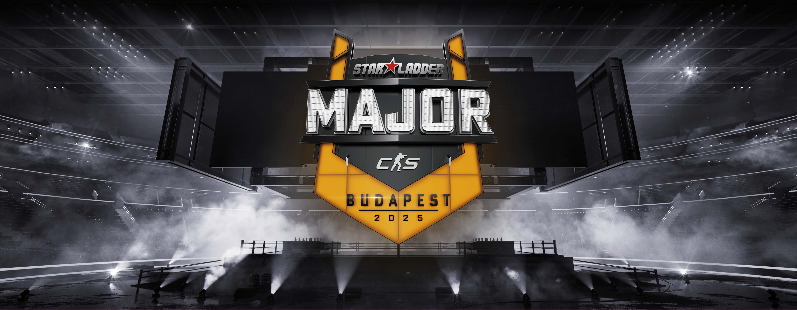
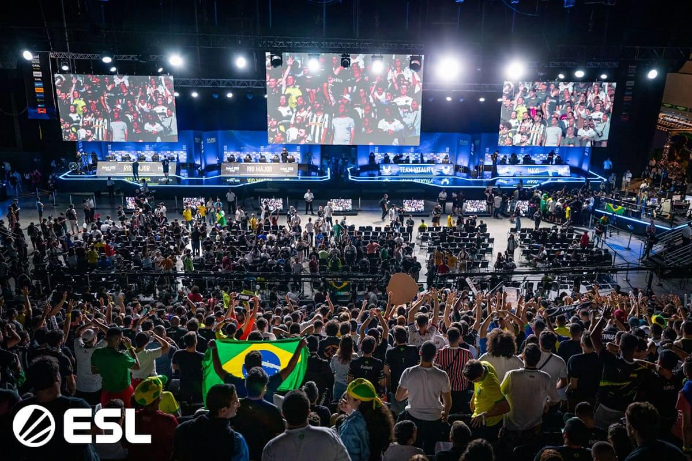
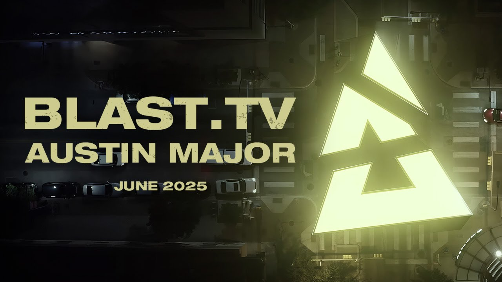
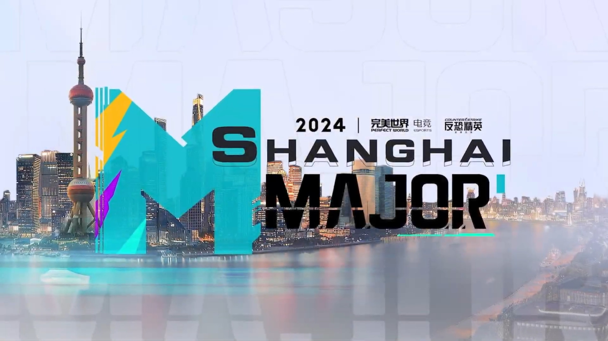
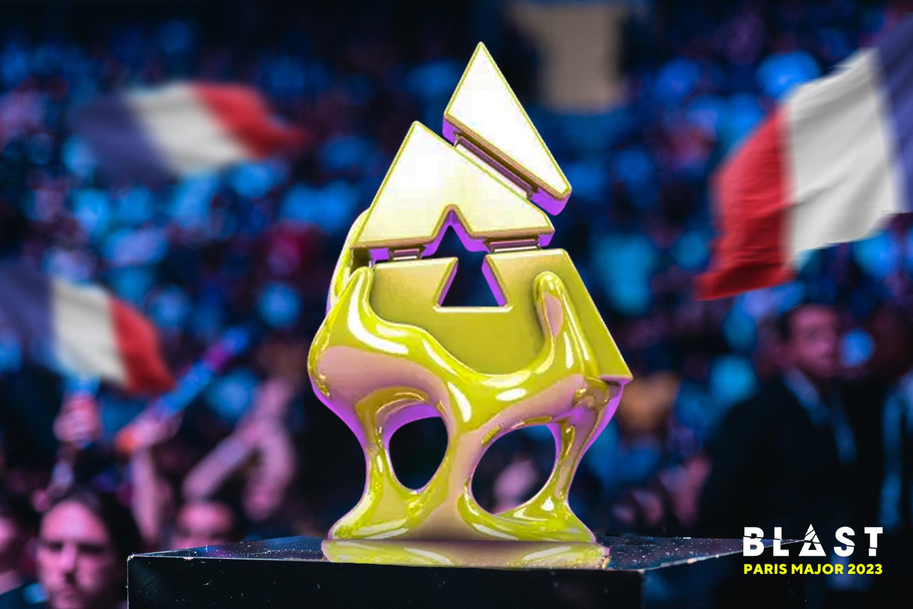
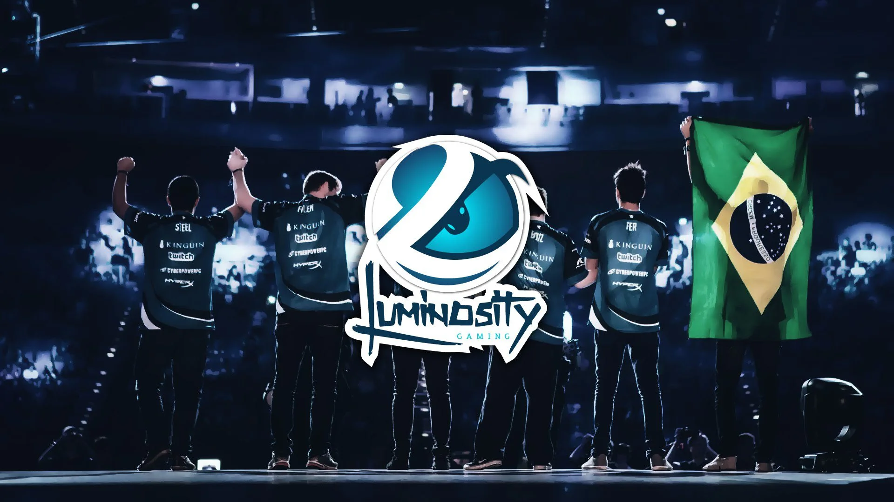
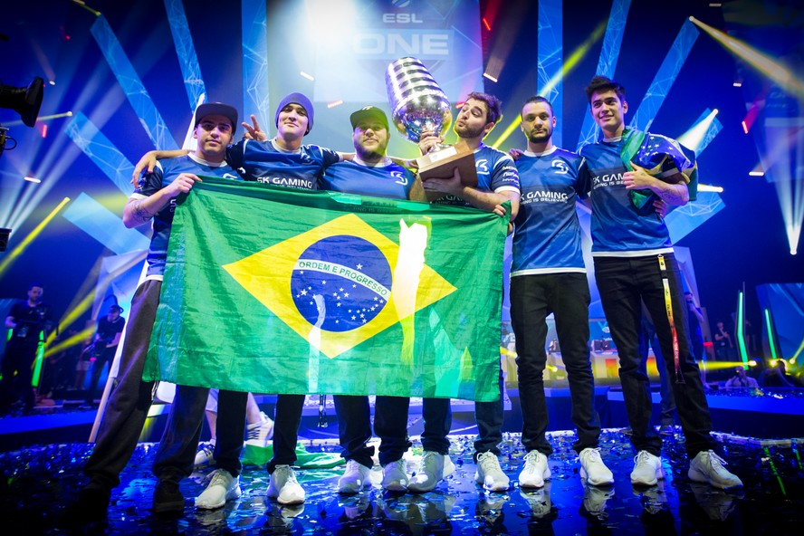

Budapest Major
Campeão: VitalityConsolidação da Vitality como uma das forças dominantes da era CS2.
CS2 • TORNEIOS
Os Majors são os torneios mais importantes do Counter-Strike, reunindo as melhores equipes do mundo em busca do título mais prestigiado do cenário.
Os Majors são campeonatos oficiais organizados pela Valve, considerados o ápice do cenário competitivo. Com premiações milionárias e enorme audiência global, vencer um Major é o maior objetivo de qualquer equipe profissional.

Milhares de fãs assistem ao vivo os maiores confrontos do CS.
Uma linha do tempo com os torneios mais recentes que marcaram a transição do CS:GO para o CS2 e ajudaram a definir o cenário competitivo atual.

Consolidação da Vitality como uma das forças dominantes da era CS2.

Um dos grandes palcos recentes do CS2, reforçando a nova geração do competitivo.

Major que marcou a expansão global do CS2 com palco na China.

Primeiro Major da era CS2, inaugurando uma nova fase do Counter-Strike competitivo.

Último Major do CS:GO, encerrando uma era histórica antes da chegada do CS2.
Além da premiação, os Majors definem legados. Jogadores e equipes são lembrados por suas conquistas nesses torneios, e muitos dos maiores momentos da história do Counter-Strike aconteceram nesses palcos.
LEGADO
O Brasil marcou a história do Counter-Strike com conquistas que colocaram o país no topo do cenário mundial. Esses títulos representam o auge de uma geração lendária.

O primeiro Major vencido por um time brasileiro, marcando o início de uma era histórica liderada por FalleN e companhia.

A consagração definitiva do Brasil no cenário mundial, com a mesma base dominando o segundo Major consecutivo.